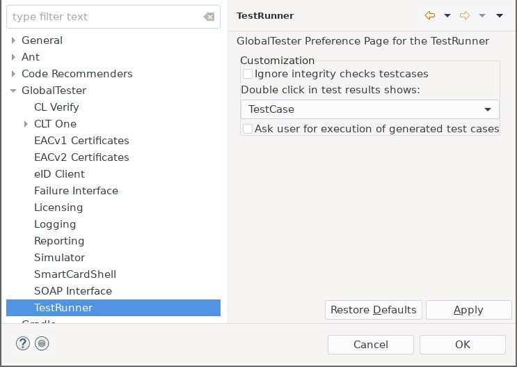

The GlobalTester > TestRunner preference page allows to edit options concerning the execution of tests, including the connected editors. 
| Option | Description | Default | ||||
Double Click in TestCampaign editor shows:
|
When you click on a TestCampaign or its parts which are shown in the TestCampaign editor, the
|
"Test Case" |